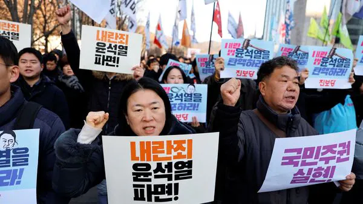

South Korean President Yoon Suk Yeol Declares and Withdraws Martial Law in Hours
 In a shocking turn of events on December 4, 2024, South Korean President Yoon Suk Yeol declared emergency martial law, only to withdraw it hours later. The unprecedented move followed mass protests and a unanimous vote by the National Assembly to reject the martial law declaration.
Martial Law Announcement: A Shocking Declaration
President Yoon announced martial law, citing threats from "North Korea's communist forces" and "anti-state elements." In a televised address, he stated that the move was essential to safeguard the country’s democratic foundations. The declaration marked the first imposition of martial law in South Korea since 1980.
Immediate Backlash: Protests and Political Defiance
The announcement sparked an immediate uproar. Thousands of citizens took to the streets, demanding the revocation of the declaration. Lawmakers from the opposition party defied security barriers to hold an emergency midnight session, where they voted unanimously to reject martial law.
Labor unions also announced an "indefinite general strike" until the martial law was withdrawn and President Yoon resigned. The public and political backlash was unprecedented in scale and intensity.
Withdrawal Amid Pressure
In a dramatic reversal, President Yoon addressed the nation early on December 4, announcing the withdrawal of martial law. He stated, “We will accept the National Assembly’s request and lift the martial law through the Cabinet meeting.” The decision came after a 5 a.m. emergency Cabinet meeting approved the motion to lift martial law.
Political Fallout
The incident has intensified calls for President Yoon’s resignation. Opposition leaders labeled the declaration as an "attempted insurrection," and even members of Yoon's ruling People Power Party described the episode as "tragic."
Yoon’s approval ratings, already at a low of 20%, are expected to plummet further. The martial law controversy has plunged South Korea into one of its deepest political crises in recent history.
Historical Context
This was South Korea’s first declaration of martial law in over four decades. The last instance in 1980 led to violent clashes and a shift in the country's political landscape. Analysts suggest that Yoon’s decision and its abrupt reversal could have long-lasting implications for South Korea's democracy.
Frequently Asked Questions
1. Why did President Yoon declare martial law?
President Yoon cited threats from North Korea and domestic anti-state elements as reasons for declaring martial law.
2. How did lawmakers react to the declaration?
Lawmakers from the opposition and other parties unanimously rejected the martial law declaration in an emergency midnight vote.
3. What are the political implications of this event?
The incident has led to increased calls for President Yoon’s resignation and deepened political turmoil in South Korea.
Stay updated on this evolving story and other global news. Follow Problem Buddy for the latest insights.
Explore More Blogs